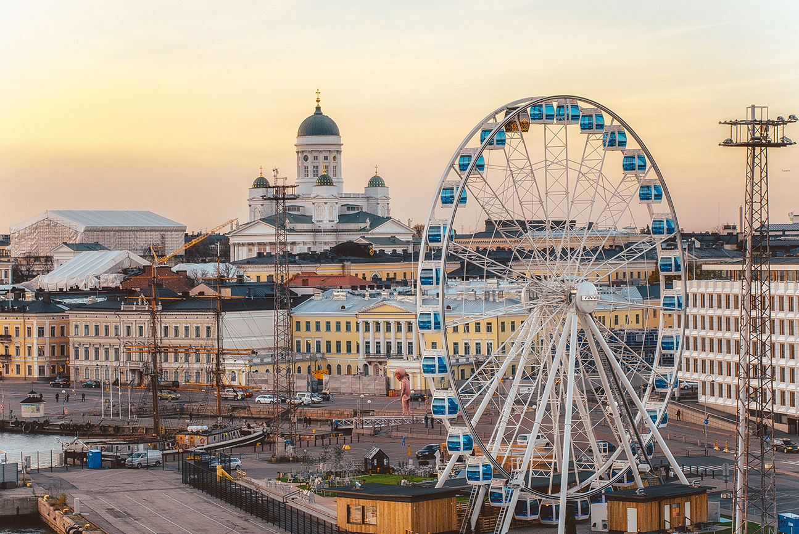
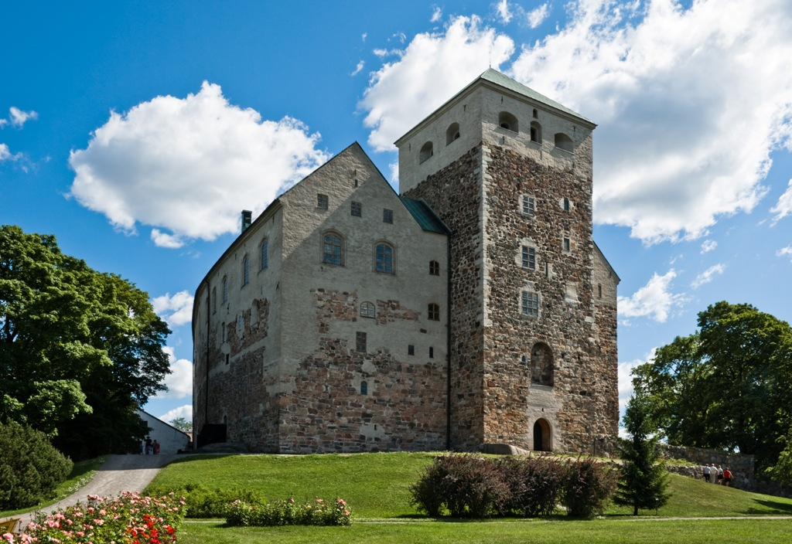
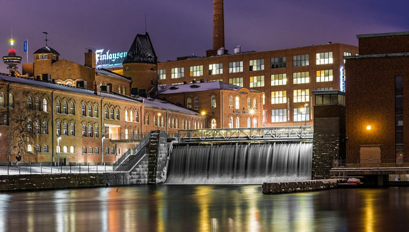

Helsinki
- 
-
Helsinki (ruots. Helsingfors) on Suomen pääkaupunki ja Uudenmaan maakuntakeskus, joka sijaitsee Etelä-Suomessa Suomenlahden pohjoisrannalla.
Helsingin kaupungissa asuu noin 684 000 henkilöä ja laajemmin koko seudulla asuu noin 1 603 000 henkilöä.
Turku
- 
-
Turku (ruots. Åbo, lat. Aboa) on Lounais-Suomen suurin kaupunki ja Varsinais-Suomen maakuntakeskus. Se sijaitsee Aurajoen suulla Saaristomeren rannikolla.
Turun kaupungissa asuu noin 206 000 henkilöä ja laajemmin koko seudulla asuu noin 351 000 henkilöä. Vastaavasti Turun kaupunkiseudun kuntayhtymän toiminta-alueella asuu noin 315 000 henkilöä.
Tampere
- 
-
Tampere (ruots. Tammerfors) on Suomen kaupunki ja Pirkanmaan maakuntakeskus, joka sijaitsee Näsijärven ja Pyhäjärven rannoilla.
Tampereen kaupungissa asuu noin 260 000 ihmistä ja laajemmin koko seudulla asuu noin 442 000 ihmistä. Vastaavasti Tampereen kaupunkiseudun kuntayhtymän toiminta-alueella asuu noin 423 000 ihmistä.